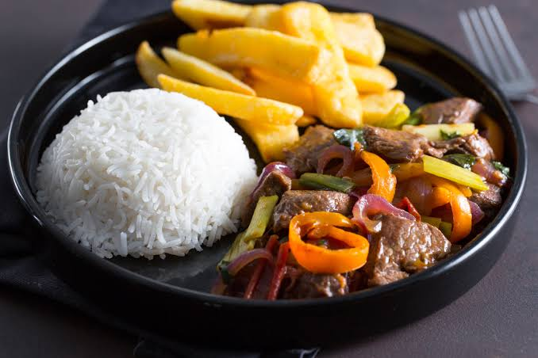

LOMO SALTADO
Ingredientes
- Cebolla morada
- Tomate
- Morones
- Aceite vegetal
- Salsa de soja
- Salsa de ostion
- Sal
- Pimienta
- Comino
- Ajo
- Vinagre
- Cebollin
- Cilantro
- Papas fritas
- Arroz blanco
Preparacion
- Corta las papas en bastones y fríelas en aceite caliente hasta que estén doradas.
- Corta la carne en cubitos y condimenta las tiras de carne con sal, pimienta, comino y el ajo molido.
- Calienta bien una sarten grande con aicete. Agrega la carne y saltéala por unos 15 a 30 segundos para que se dore por fuera.
- En la misma sarten añate la cebolla y el moron. Luego de unos segundos agrega el tomate.
- Vuelve a poner la carne al sarten con su jugo y añade vinagre, salsa de ostion, salsa de soja y mezcla todo a fuego fuerte.
- Apaga el fuego y añade cebollin y cilantro. Sirve arroz, papas fritas y a lo ultimo servi el lomo saltado alado de las papas y el arroz.


Otras recetas
Receta de empanada de lomo saltado.
Receta de tallarin saltado.
Receta de pollo saltado.
Receta de tacu tacu con lomo.